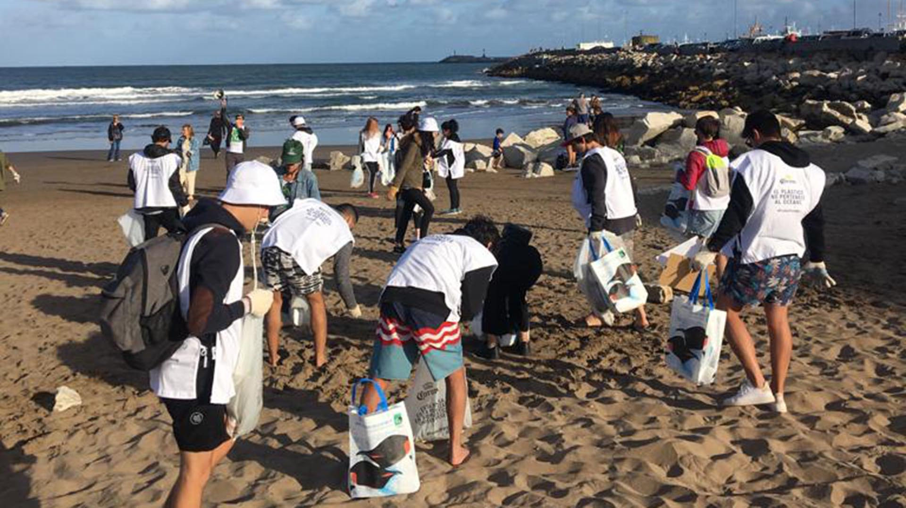

Principales causas de contaminacion de océanos
Dentro de las principales causas de contaminación de los océanos se pueden distinguir tres grandes categorías. En primer lugar, la contaminación por derrame de petróleo. Luego, se diferencia la contaminación por el vertido ilegal de residuos o sustancias tóxicas. Por último, otra de las grandes causas de contaminación de océanos son los desechos plásticos.
¡Animate a participar en grupos de limpieza de playas!
Formas de prevenir la contaminación
Prevenir la contaminación de los océanos es posible mediante la aplicación de las tres R: reducir, reutilizar y reciclar. Reducir el uso de plásticos de un solo uso, como botellas y bolsas, disminuye la cantidad de desechos que llegan al mar. Reutilizar productos en lugar de desecharlos ayuda a minimizar la producción de basura. Reciclar adecuadamente separa los materiales que pueden tener una segunda vida, evitando que terminen en el océano. Estas prácticas simples pueden marcar una gran diferencia en la protección de los mares.